1
DFT Coding RulesIntroduction
This chapter provides detailed reference information for the Design For Test (DFT) policy for the Leda Checker tool. This set of rules checks for test design rule violations within your RTL-level design. Most of the DFT rules have both flip-flop versions (check on flip-flop) and latch versions (check on latch). The DFT rules are used to check for design errors that can prevent scan insertion and data capture or reduce fault coverage.
There are more DFT rules in the DFT ruleset for the Design policy.
Most of the DFT rules are extracted from the set of rules used by the Synopsys RTL DRC tool. Therefore, each DFT rule label in the Leda Checker tool exactly matches the corresponding rule label prefixed with "TEST" in the RTL DRC tool. If you need more detailed information on these DFT rules, see the RTL DRC help. Run dc_shell, and at the prompt type:
% help TEST-rulenumberFor information about differences between the Leda DFT policy and the RTL DRC checker, see "Using the DFT Policy" .
The Leda DFT rules are grouped into the following rulesets, each of which impose constraints on different aspects of the applicable language:
Using the DFT Policy
Because the Leda DFT rules are based on RTL DRC checks, you must enter some information about the test clocks when you use some rules of this policy. The Leda Checker prompts for information about test clocks when you select some DFT rules among TEST_953, TEST_954, TEST_966, TEST_967, TEST_970, TEST_971, TEST_972, TEST_973. In batch mode, you must use the following options described in Table 2.
Limitations of DFT Policy with Respect to RTL DRC
In Leda's DFT checks, no delay is taken into account; it is always assumed that the test clock period is 100 ns and the strobe point occurs at 95 ns (default RTL DRC values). Leda also assumes that all test clock events occur before this strobe point.
The following RTL DRC commands (used to define the test protocol) are ignored by the Leda Checker tool, since no signal value propagation is performed.
- set_test_hold
- set_test_initial
- set_test_assume
- set_test_isolate
The Checker tool also ignores the scan style. Leda only checks rules that are checkable using the LSSD (Level Sensitive Scan Design). This may lead to some differences between the Leda tests and the RTL DRC. In general, Leda's tests are more conservative.
Data Capture Ruleset
The following rules are from the data capture ruleset:
DFT_003
Message: Avoid using both positive-edge and negative-edge triggered flip-flops in your design
Description This rule checks whether both rising and falling edge clocks exist within the design. Policy DFT Ruleset DATA_CAPTURE Language VHDL/Verilog Type Chip-level Severity Warning
For information on differences between Leda DFT checks and RTL DRC checks, see "Using the DFT Policy" .
TEST_972
Message: Clock affects both clock and data inputs of flipflops
Description This rule checks if a clock signal drives both the data input and the clock pin of a flip-flop.For this rule to work, you must specify a test clock. For more information, see "Using the DFT Policy" . Policy DFT Ruleset DATA_CAPTURE Language VHDL/Verilog Type Chip-level Severity Error
Example
The following circuit diagram illustrates the problem:
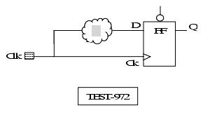
For information on differences between Leda DFT checks and RTL DRC checks, see "Using the DFT Policy" .
TEST_973
Message: Clock affects both clock and data inputs of latches
Description This rule checks if a clock signal drives both the data input and the clock pin of a latch.For this rule to work, you must specify a test clock. For more information, see "Using the DFT Policy" . Policy DFT Ruleset DATA_CAPTURE Language VHDL/Verilog Type Chip-level Severity Error
Example
The following circuit diagram illustrates the problem:
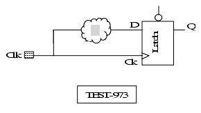
For information on differences between Leda DFT checks and RTL DRC checks, see "Using the DFT Policy" .
TEST_974
Message: Latch enabled by a clock feeds latches enabled by the same clock
Description The rule detects if a latch output enabled by a given clock affects the data input of latches using the same clock. Policy DFT Ruleset DATA_CAPTURE Language VHDL/Verilog Type Chip-level Severity Error
Example
The following circuit diagram illustrates the problem:
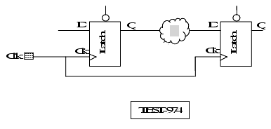
For information on differences between Leda DFT checks and RTL DRC checks, see "Using the DFT Policy" .
TEST_975
Message: Latch enabled by a clock affects data input of flipflops clocked by the trailing edge of the same clock
Description The rule detects if a latch output enabled by a given clock affects the data input of flip-flops using the trailing edge of the same clock. Policy DFT Ruleset DATA_CAPTURE Language VHDL/Verilog Type Chip-level Severity Error
Example
The following circuit diagram illustrates the problem:
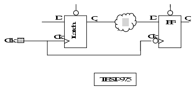
For information on differences between Leda DFT checks and RTL DRC checks, see "Using the DFT Policy" .
TEST_978
Message: Latch data gates clocks of flipflops. Combination of latch data and clock signal to clock a flipflop is not allowed
Description This rule detects if a signal used to clock a flip-flop is a combination of a latch output and a given clock where the latch and the flip-flop are within the same clock domain. Policy DFT Ruleset DATA_CAPTURE Language VHDL/Verilog Type Chip-level Severity Error
Example
The following circuit diagram illustrates the problem:
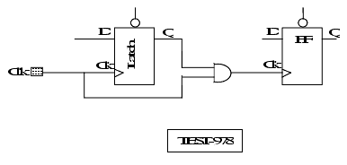
For information on differences between Leda DFT checks and RTL DRC checks, see "Using the DFT Policy" .
TEST_979
Message: Latch data gates clocks enabling latches. Combination of latch data and clock signal to clock a latch is not allowed
Description This rule detects if a signal used to enable a latch is a combination of a latch output and a given clock, and the two latches are within the same clock domain. Policy DFT Ruleset DATA_CAPTURE Language VHDL/Verilog Type Chip-level Severity Error
Example
The following circuit diagram illustrates the problem:
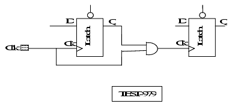
For information on differences between Leda DFT checks and RTL DRC checks, see "Using the DFT Policy" .
TEST_980
Message: Flipflop data gates clocks to flipflops. Combination of flipflop data and clock signal to clock a flipflop is not allowed
Description This rule detects if a signal used to clock a flip-flop is a combination of a flip-flop output and a given clock and the two flip-flops are within the same clock domain. Policy DFT Ruleset DATA_CAPTURE Language VHDL/Verilog Type Chip-level Severity Error
Example
The following circuit diagram illustrates the problem:
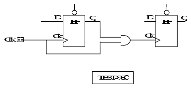
For information on differences between Leda DFT checks and RTL DRC checks, see "Using the DFT Policy" .
TEST_981
Message: Flipflop data gates clocks enabling latches. Combination of flipflop data and clock signal to clock a latch is not allowed
Description This rule detects if a signal used to enable a latch is a combination of a flip-flop output and a given clock and the latch and flip-flop are within the same clock domain. Policy DFT Ruleset DATA_CAPTURE Language VHDL/Verilog Type Chip-level Severity Error
Example
The following circuit diagram illustrates the problem:
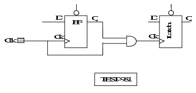
For information on differences between Leda DFT checks and RTL DRC checks, see "Using the DFT Policy" .
TEST_994
Message: Clock affects multiple clock or async ports of register
Description This rule detects if a clock feeds into a clock pin and a asynchronous control of a given register. Policy DFT Ruleset DATA_CAPTURE Language VHDL/Verilog Type Chip-level Severity Error
Example
The following circuit diagram illustrates the problem:
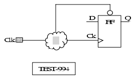
Fault Coverage Ruleset
The following rules are from the fault coverage ruleset. For information on differences between Leda DFT checks and RTL DRC checks, see "Using the DFT Policy" .
DFT_006
Message: Multiple clocks in the unit
Description None. Policy DFT Ruleset FAULT_COVERAGE Language VHDL/Verilog Type Block-level Severity Error
For information on differences between Leda DFT checks and RTL DRC checks, see "Using the DFT Policy" .
DFT_008
Message: Tri-state is detected
Description None. Policy DFT Ruleset FAULT_COVERAGE Language VHDL/Verilog Type Block-level Severity Error
For information on differences between Leda DFT checks and RTL DRC checks, see "Using the DFT Policy" .
DFT_009
Message: Register all outputs from the block for improved coverage: %s
Description This rule only checks at the architecture/module level. There is a similar rule in the Leda general coding guidelines policy that you can use to check the entire design.This rule only works if you specify the top level of the design using the -top switch. Policy DFT Ruleset FAULT_COVERAGE Language VHDL/Verilog Type Chip-level Severity Error
For information on differences between Leda DFT checks and RTL DRC checks, see "Using the DFT Policy" .
TEST_960
Message: Avoid asynchronous feedback loops
Description This rule checks for combinatorial asynchronous path loops. Policy DFT Ruleset FAULT_COVERAGE Language VHDL/Verilog Type Chip-level Severity Error
For information on differences between Leda DFT checks and RTL DRC checks, see "Using the DFT Policy" .
TEST_970
Message: Clock affects data inputs of flipflops
Description This rule checks if a clock interacts with the data input of a flip-flop.For this rule to work, you must specify a test clock. For more information, see "Using the DFT Policy" . Policy DFT Ruleset FAULT_COVERAGE Language VHDL/Verilog Type Chip-level Severity Error
Example
The following circuit diagram illustrates the problem:
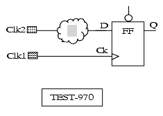
For information on differences between Leda DFT checks and RTL DRC checks, see "Using the DFT Policy" .
TEST_971
Message: Clock affects data inputs of latches
Description This rule checks if a clock interacts with the data input of a latch.For this rule to work, you must specify a test clock. For more information, see "Using the DFT Policy" . Policy DFT Ruleset FAULT_COVERAGE Language VHDL/Verilog Type Chip-level Severity Error
Example
The following circuit diagram illustrates the problem:
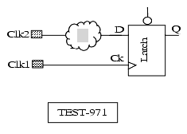
For information on differences between Leda DFT checks and RTL DRC checks, see "Using the DFT Policy" .
TEST_976
Message: Latches capture only when more than one clock is on
Description This rule checks if a latch can be used as a part of a scan chain. If so, a latch having multiple clocks to enable data must be able to capture data with one clock active and all others off. Policy DFT Ruleset FAULT_COVERAGE Language VHDL/Verilog Type Chip-level Severity Error
Example
The following circuit diagram illustrates the problem:
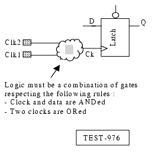
For information on differences between Leda DFT checks and RTL DRC checks, see "Using the DFT Policy" .
TEST_977
Message: Flipflops capture only when more than one clock is on
Description This rule checks if a flip-flop can be used as a part of a scan chain. If so, a flip-flop having multiple clocks to clock data must be able to capture data with one clock active and all others off. Policy DFT Ruleset FAULT_COVERAGE Language VHDL/Verilog Type Chip-level Severity Error
Example
The following circuit diagram illustrates the problem:
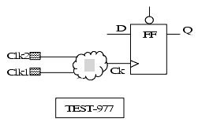
Informational Ruleset
The following rules are from the informational ruleset:
DFT_017
Message: Synchronous reset/set/load <%item> detected
Description None. Policy DFT Ruleset INFORMATIONAL Language VHDL/Verilog Type Block-level Severity Warning
For information on differences between Leda DFT checks and RTL DRC checks, see "Using the DFT Policy" .
DFT_019
Message: Asynchronous reset/set/load <%item> detected
Description None. Policy DFT Ruleset INFORMATIONAL Language VHDL/Verilog Type Block-level Severity Note
For information on differences between Leda DFT checks and RTL DRC checks, see "Using the DFT Policy" .
DFT_021
Message: Latch inferred
Description This rule only checks at the architecture/module level. There is a similar rule in the Leda general coding guidelines policy that you can use to check the entire design. Policy DFT Ruleset INFORMATIONAL Language VHDL/Verilog Type Block-level Severity Error
For information on differences between Leda DFT checks and RTL DRC checks, see "Using the DFT Policy" .
DFT_022
Message: Incomplete case statement
Description This rule fires if all the alternatives of the case statement are not covered and if there is no default clause. Policy DFT Ruleset INFORMATIONAL Language Verilog Type Block-level Severity Error
Example
The following examples show valid and invalid coding styles:
module doc_hyd (gate, q); input [1:0] gate; output q; reg q; always @gate begin // DFT_022:Incomplete case statement case (gate) 2'b00: q = 1'b0; 2'b10: q = 1'b1; endcase end always @gate begin // no DFT_022 error case (gate) 2'b00: q = 1'b0; 2'b10: q = 1'b1; default:q = 1'b0; endcase end endmoduleFor information on differences between Leda DFT checks and RTL DRC checks, see "Using the DFT Policy" .
Scan Insertion Ruleset
The following rules are from the scan insertion ruleset:
For information on differences between Leda DFT checks and RTL DRC checks, see "Using the DFT Policy" .
DFT_002
Message: Internally generated clock detected
Description This rule verifies that all clocks are controllable from the top level of the design and not internally generated via a sequential block.Rationale: internally generated clocks may not be controllable from the boundary of the chip. This reduces test coverage. Policy DFT Ruleset SCAN_INSERTION Language VHDL/Verilog Type Chip-level Severity Error
For information on differences between Leda DFT checks and RTL DRC checks, see "Using the DFT Policy" .
TEST_953
Message: Flipflops with clocks tied to a signal that is not driven by Test Clock. Flipflops' clock signal is not reached by any Test Clock
Description This rule checks whether the flip-flop clock is uncontrollable. That case occurs when the test clock does not reach any signal which drives the clock input pins of flip-flops.For this rule to work, you must specify a test clock. For more information, see "Using the DFT Policy" . Policy DFT Ruleset SCAN_INSERTION Language VHDL/Verilog Type Chip-level Severity Error
Example
The following circuit diagram illustrates the problem:
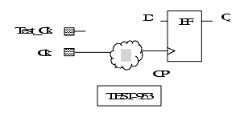
For information on differences between Leda DFT checks and RTL DRC checks, see "Using the DFT Policy" .
TEST_954
Message: Latches with clocks tied to a signal that is not driven by Test Clock. Latch clock signal is not reached by any Test Clock
Description This rule checks whether the latch clock is uncontrollable. That case occurs when the test clock does not reach any signal which drives the clock input pins of latches.For this rule to work, you must specify a test clock. For more information, see "Using the DFT Policy" . Policy DFT Ruleset SCAN_INSERTION Language VHDL/Verilog Type Chip-level Severity Error
Example
The following circuit diagram illustrates the problem:
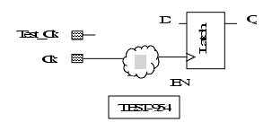
For information on differences between Leda DFT checks and RTL DRC checks, see "Using the DFT Policy" .
TEST_963
Message: Flipflops have clocks with no off-state controllability. Test Clock reaches flipflops but does not control them at beginning of cycle
Description This rule detects if the test clock reaches flip-flops but the flip-flop clocks cannot change state as result of test clock toggling. Policy DFT Ruleset SCAN_INSERTION Language VHDL/Verilog Type Chip-level Severity Error
Example
The following circuit diagram illustrates the problem:
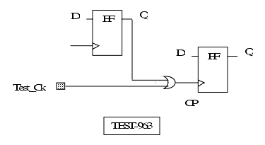
For information on differences between Leda DFT checks and RTL DRC checks, see "Using the DFT Policy" .
TEST_964
Message: Latches have clocks with no off-state controllability. Test Clock reaches latches but does not control them at beginning of cycle
Description This rule detects if the test clock reaches latches but the latch clocks cannot change state as result of test clock toggling. Policy DFT Ruleset SCAN_INSERTION Language VHDL/Verilog Type Chip-level Severity Error
Example
The following circuit diagram illustrates the problem:
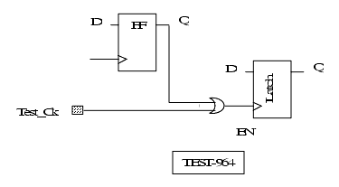
For information on differences between Leda DFT checks and RTL DRC checks, see "Using the DFT Policy" .
TEST_965
Message: Latches not holding data in off-state. Test Clock reaches latch but does not hold data in them at beginning of cycle
Description This rule detects if the test clock does not hold data at the beginning of the test clock cycle. Policy DFT Ruleset SCAN_INSERTION Language VHDL/Verilog Type Chip-level Severity Error
Example
The following circuit diagram illustrates the problem:
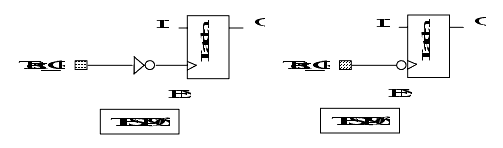
For information on differences between Leda DFT checks and RTL DRC checks, see "Using the DFT Policy" .
TEST_966
Message: Flipflops have no asynch controllability. No Test Asynch reaches flipflop's async control pin
Description This rule checks whether the flip-flop asynchronous control signal is uncontrollable. That case occurs when the test asynch does not reach any signal which drives the asynchronous control input pins of flip-flops.For this rule to work, you must specify a test clock. For more information, see "Using the DFT Policy" . Policy DFT Ruleset SCAN_INSERTION Language VHDL/Verilog Type Chip-level Severity Error
Example
The following circuit diagram illustrates the problem:
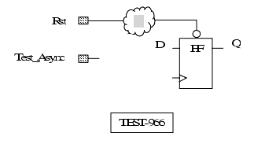
For information on differences between Leda DFT checks and RTL DRC checks, see "Using the DFT Policy" .
TEST_967
Message: Latches have no asynch controllability. No Test Asynch reaches latches async control pin
Description This rule detects if the latch asynchronous control signal is uncontrollable. That case occurs when the test asynch does not reach any signal which drives the asynchronous control input pins of latches.For this rule to work, you must specify a test clock. For more information, see "Using the DFT Policy" . Policy DFT Ruleset SCAN_INSERTION Language VHDL/Verilog Type Chip-level Severity Error
Example
The following circuit diagram illustrates the problem:
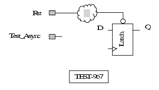
For information on differences between Leda DFT checks and RTL DRC checks, see "Using the DFT Policy" .
TEST_968
Message: Flipflops have asynchs that cannot be disabled. Test Asynch reaches flipflops but cannot disable their asynch controls
Description This rule detects if the test asynch reaches flip-flops but cannot disable their async controls. Policy DFT Ruleset SCAN_INSERTION Language VHDL/Verilog Type Chip-level Severity Error
Example
The following circuit diagram illustrates the problem:
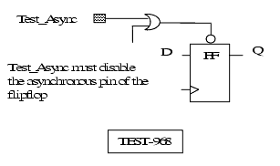
For information on differences between Leda DFT checks and RTL DRC checks, see "Using the DFT Policy" .
TEST_969
Message: Latches have asynchs that cannot be disabled. Test Asynch reaches latches but cannot disable their asynch controls
Description This rule detects if the Test_async reaches latches but cannot disable their async controls. Policy DFT Ruleset SCAN_INSERTION Language VHDL/Verilog Type Chip-level Severity Error
Example
The following circuit diagram illustrates the problem:
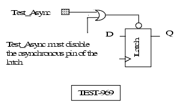
For information on differences between Leda DFT checks and RTL DRC checks, see "Using the DFT Policy" .